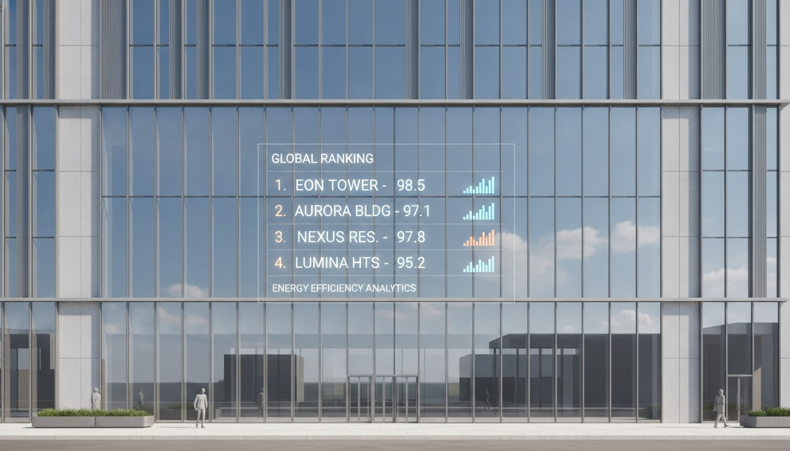

There is a quiet genre of marketing that almost everyone trusts more than it deserves: the tool-maker's "best tools" list. Chaos has two strong examples live right now. One is a "Top 20 AI tools for architects in 2026" roundup covering visualization, rendering, and virtual reality. The other is a "best AI rendering tools for architects 2026" comparison that puts Veras next to Midjourney, Rendair AI, Archsynth, xFigura, and Artlist. Both are genuinely useful. Both are also written by the company that makes Veras, Enscape, V-Ray, and the Chaos AI Material Generator.
That is not a gotcha. It is the whole reason to read carefully. A vendor list is not a fraud, it is a point of view with a price tag attached, and the skill worth having is telling honest curation apart from positioning. So we did the audit we would do on any roundup, except this time the publisher also sells half the shelf.
The honest part: most of this is real
Let us be fair before we are skeptical, because fairness is the point. Chaos's lists are not padded with vaporware. The categories are the right ones an architect actually thinks in: concept visualization, photoreal rendering, materials, VR walkthroughs. The competitors it names in the rendering comparison are real, current tools that working architects evaluate, and naming them at all is more candor than a lot of vendor content manages.
The clearest example of a legitimate inclusion is Chaos's own AI Material Generator, which the company describes as turning real-world photos into ready-to-use materials. That is a concrete, testable capability, photograph a surface, get a usable material, and it solves a real chore. It belongs on a list of useful AI tools for architects on its merits, not just because Chaos made it. When a vendor includes its own product and the product is actually good, that is not the problem. The problem is structural, and it shows up in the framing around the good picks.
A vendor's roundup is not a lie. It is a true map drawn by someone who owns the most valuable building on it.
The self-serving part: who sits in the middle
Here is the tell. In the rendering comparison, the lineup is Veras, Midjourney, Rendair AI, Archsynth, xFigura, and Artlist. Five of those six are competitors. One of them is the house brand. Read the comparison and notice whose strengths set the axes: control, fidelity to the source model, integration with a BIM and rendering pipeline. Those are real evaluation criteria, and they also happen to be exactly where a tool from the maker of Enscape and V-Ray is strongest. Midjourney, a general image generator, will always look "less controllable" on a rubric written by a company that sells controllability.
That is the move to watch in any vendor roundup. The picks can be honest while the criteria quietly tilt the table. Nobody has to lie. You just choose the yardstick that flatters your product, and the conclusion writes itself.
Strong category map and a real list of tools architects use, including legitimate competitors named by name. Docked for structural conflict of interest: Chaos's own products anchor the lists and the evaluation criteria align with Chaos's strengths. Excellent for discovery, unreliable as a verdict on which tool "wins."
What gets framed around the home team
Watch how each non-Chaos tool tends to be characterized. Midjourney shows up as the brainstorming and concept engine, true, but also subtly the "you'll lose your geometry" cautionary tale. Rendair AI, Archsynth, and xFigura get described as capable but narrower, often defined by what they do not integrate with rather than what they do well. Artlist sits at the asset and stock end. None of those descriptions is false. But the gravitational center is always Veras, and every other tool's orbit is described relative to it. A neutral reviewer would let each tool define its own best use first, then compare.
Honest curation vs marketing, side by side
To make the distinction concrete, here is how to tell which mode a given line of vendor content is operating in. The same post usually does both, sometimes in the same paragraph.
| Signal | Honest curation | Self-serving framing |
|---|---|---|
| How competitors are described | On their own best use case | Only relative to the vendor's tool |
| Evaluation criteria | Match the architect's job | Match the vendor's strengths |
| The vendor's own product | Included because it's genuinely good | Anchors the list and the ranking |
| What's missing | Strong rivals are named anyway | A direct threat is conspicuously absent |
| Claims you can check | Specific, testable capabilities | Vague superlatives ("best," "leading") |
Run Chaos's posts through that grid and they land in the middle, which is honest of us to say. The capability claims are mostly checkable and specific, the AI Material Generator's "photos into materials" being a good example. The framing of rivals and the choice of criteria lean toward the house. That mix is typical of good vendor content, the kind worth reading, as long as you read it with the grid running.
The vendor-neutral reading protocol
This is the part you can reuse on any tool-maker's roundup, Chaos's or anyone else's. Five questions, in order:
- Who publishes this, and do they sell anything on the list? Find the masthead before the rankings. If the publisher is a vendor, every "best" is a marketing claim until proven otherwise.
- Which product sits in the center? The tool that everything else is compared against is usually the one being sold.
- Are competitors described on their own terms? If a rival is only ever defined by what it lacks versus the house brand, the framing is doing sales work.
- Do the criteria match the architect's job or the vendor's strengths? Controllability, integration, fidelity, those are real, but ask whether they were chosen because you need them or because they win.
- What's missing? The most honest signal in any roundup is whether the publisher's most dangerous competitor made the cut.
You do not need to distrust the list to use it well. You need to know which job it is good for. For discovering tools and learning a category, a vendor roundup is often the most current, best-organized thing available, precisely because the vendor lives in that market. For deciding which tool to buy, treat it as one biased witness among several.
Our take: read it, don't obey it
Chaos's "Top 20" and its rendering comparison are above-average vendor content. They are well-organized, mostly accurate, and they name real competitors instead of pretending the field is empty. If you are new to AI for architecture, reading them is a faster orientation than most independent listicles, many of which are thinly rewritten affiliate farms anyway. We would rather an architect start with Chaos's map than with an SEO sweatshop's.
But the conflict of interest is structural and unfixable, not a flaw Chaos could edit out. The company cannot both sell Veras and be the neutral arbiter of whether Veras is the best AI renderer, no matter how fair the prose. The lists are most trustworthy exactly where they are most checkable, "the AI Material Generator turns photos into materials" is a claim you can verify in an afternoon, and least trustworthy exactly where they are most subjective, the rankings and the "best" verdicts. Use the checkable parts. Discount the verdicts. And when a roundup tells you the publisher's own product wins, that is the moment to go read someone who has nothing to sell.
The deeper point is that this applies far beyond Chaos. Every tool maker with a blog now publishes a "best tools" list, because it ranks, it earns trust, and it routes buyers home. The skill is not cynicism. It is knowing that a list can be useful and biased at the same time, and reading accordingly.
If you're about to make a tool decision this week
Open the vendor roundup for discovery, then build your own shortlist and re-evaluate each candidate on the criteria your projects actually demand, not the ones the post chose for you. Test the house brand and at least one named competitor on the same source image and the same client-style brief. The gap between the vendor's framing and your own result is the most honest review you will ever read.
We audit the lists that shape what architects buy, including the ones written by the companies selling the tools. Join the studio newsletter for weekly field notes. For the flagship at the center of Chaos's framing, read our breakdown of what's new in Veras 4.4 and 4.5, and for the wider genre, see how we audited the generic "best AI tools for architects" listicles.
Reported from Chaos's published "Top 20 AI tools for architects" and "best AI rendering tools for architects 2026" posts, with tool names and the AI Material Generator description drawn from those sources and our 2026-06-01 intel sweep. Framing analysis reflects Vista Studios' editorial read; we have not independently benchmarked every tool named. No affiliate or sponsored relationship with Chaos, Veras, or any tool mentioned.